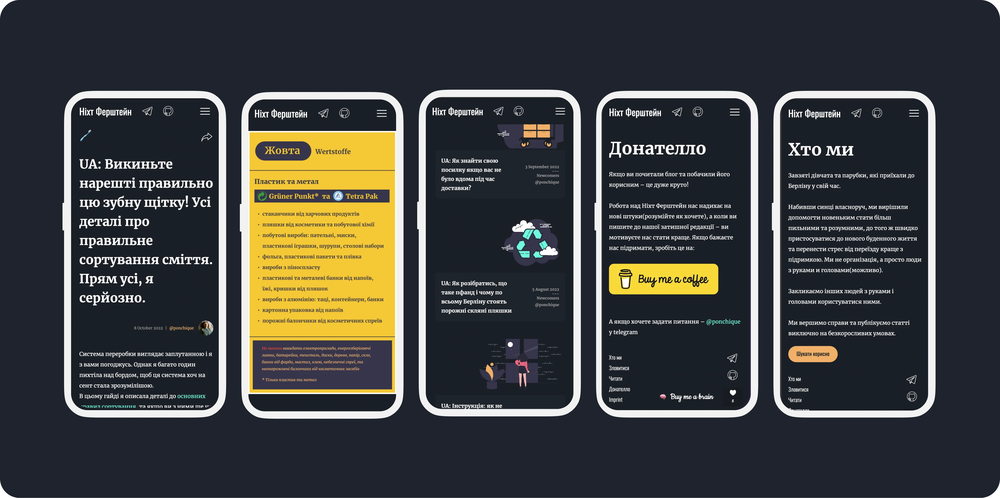

Recent works
Quick overview of the latest design projects
Learn Clarify Build
Comprehensive system for tracking tasks at construction site.
Learning management system
Crafting optimal experiences within technical constraints through meticulous research.
E-commerce overview
IPhone 13 mini / IPad mini 8.3 / MacOS
Social activities
Comfortable reading experience focused on minimalist style.

Palette discovery
Exploring colors to capture the project's essence.